A virtual instrument for physics-based musical gesture: CHON
Abstract
Physical metaphor provides a visceral and universal logical framework for composing musical gestures. Physical simulations can aid composers in creating musical gestures based in complex physical metaphors. CHON (Coupled Harmonic Oscillator Network) is a new cross-platform application for composing musical gestures based in Newtonian physics. It simulates a network of particles connected by springs and sonifies the motion of individual particles. CHON is an interactive instrument that can provide complex yet tangible and physically grounded control data for synthesis, sound processing, and musical score generation. Composers often deploy dozens of independent LFOs to control various parameters in a DAW or synthesizer. By coupling numerous control signals together using physical principles, CHON represents an innovation on the traditional LFO model of musical control. Unlike independent LFOs, CHON’s signals push and pull on each other, creating a tangible causality in the resulting gestures. In this paper, I briefly describe the design of CHON and discuss its use in composition through examples in my own works.
Author Keywords
Physics, oscillator, modulation, LFO, interactive
CCS Concepts
•Applied computing → Sound and music computing;
•Computing Methodologies → Interactive simulation; Physical simulation;
Introduction
Physical gesture is a powerful metaphor for constructing musical narrative. Using physical metaphors, a composer can forge cohesion between disparate elements of a piece and create a sense of causality. In the 20th century, composers began to overtly incorporate physics and physical metaphors into their music. Edgard Varèse described his conception of music using physical language such as "sound-mass," "attraction-repulsion," and "shifting planes" [1]. György Ligeti used a literal physical system (100 metronomes) in his Poéme Symphonique [2].
The metronomes in Ligeti’s Poéme Symphonique act as independent oscillators ticking at their own rate. This is a mechanical version of the Low Frequency Oscillators (LFOs) that are regularly used by composers of electronic music. Periodic oscillators are ubiquitous in nature and they are of fundamental importance in physics. However, an infinite sine wave (or other waveform) that doesn’t decay or vary in time is an abstract concept. Real oscillators exist in networks of causality and influence, they are acted upon and they act on other objects. This is why the model of coupled harmonic oscillators is of such profound interest to scientists.
A basic coupled harmonic oscillation system consists of two masses attached with springs, such as the pendulums in Image 1. In such a system, energy is passed back and forth between oscillators and complex motion can arise from the superposition of modes, especially as the number of oscillators in the system increases.

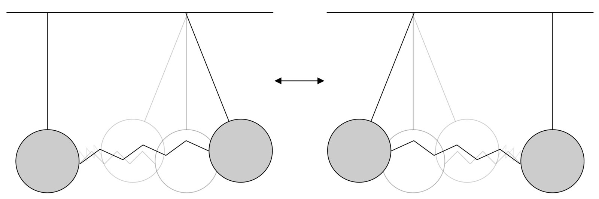
Coupled Pendulum - the amplitude of one pendulum’s oscillation increases while the other decreases. Then, the process reverses.
Coupled oscillators (in the form of mass-spring models) also play a central role in the field of physical modeling synthesis. Physical modeling synthesis is largely focused on re-synthesizing believable facsimiles of real instruments [3][4]. It is also less commonly used for creating fantastical virtual instruments of unreal proportions or configurations [5][6][7]. Claude Cadoz and others at ACROE in Grenoble pioneered the use of the mass-spring model in physical modeling [8]. They generalized mass-spring models into what they call a mass-interaction scheme, where, in addition to more standard mass-spring situations, particles may be lumped into unique configurations and the forces connecting them may be non-linear [9]. Research into the mass-interaction model has continued at GIPSA-lab, resulting in the MI-gen~ Max/MSP toolbox [10]. MI-gen~ allows Max users to construct custom virtual physical systems using modular building blocks (Max objects). PMPD is a similar toolbox for the Pure Data environment [11].
Though this kind of system is well-known in physical modeling, the perspective has most often been focused on how the sum total of the system simulates an object such as a string. In mass-interaction schemes, even though the atomic units of masses and forces are available to the user, these units are treated as modules to build up a virtual instrument. An application in which the individual oscillators or masses are treated as voices in their own right to create, for example, contrapuntal structures and cascading antiphonic forms, remains to be explored. I am speaking of using a coupled oscillator system as a new kind of LFO, or an LFO network, that is tangible, physical, and causal. With an LFO system such as this, a composer can drive synthesis parameters or musical score generation with a modulation scheme grounded in real phenomena. It was an interest in this application of coupled harmonic oscillators that led me to create CHON [12].
CHON (Coupled Harmonic Oscillator Network) is a real-time interactive application for generating musical material and control signals by using a simulation of coupled harmonic oscillators as an interface. CHON is not meant to be a scheme for physical modeling synthesis, but rather a control signal scheme for shaping musical parameters using physically plausible interactions. Rather than an innovation in physical modeling synthesis, I consider CHON to be an innovation on the traditional LFO (Low Frequency Oscillator) model.
CHON differs further from projects such as MI-gen~ in that it requires no knowledge of the Max environment, computer programming, physics, or other specialized skills. CHON is used by directly clicking and dragging oscillators on screen. This intervention sets the coupled oscillator system into a chain reaction. The user can then let the system evolve on its own, change parameters of the simulation such as the stiffness of springs or the damping coefficient, or click an oscillator to interrupt the flow of the system directly.
The balance of the precise simulation of a physical system against the direct user interaction makes CHON a hybrid algorithmic-heuristic tool, allowing intuitive intervention in an otherwise rigidly deterministic system. The musical gestures that one can create with CHON range from trite (a sine wave) to chaotic (dozens of mutually dependent oscillators), but they are nonetheless tangible because of their connection to the physical world.
Physics

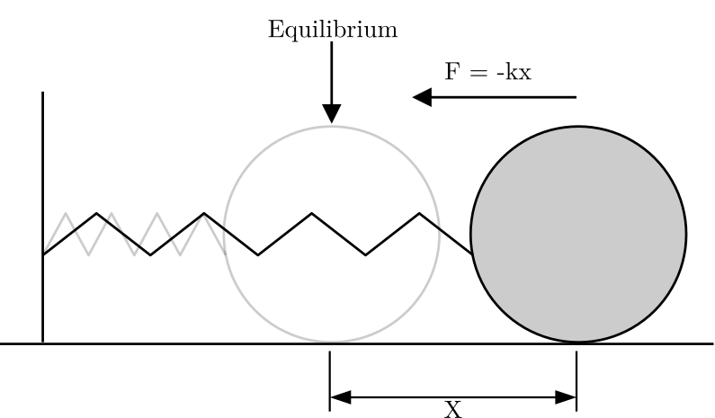
Simple Harmonic Oscillator - The restoring force is F = −kx. The motion is sinusoidal.
A simple harmonic oscillator can be represented by a single mass on a spring. The behavior of springs (within elastic limits) is well described by Hooke’s Law. Hooke’s law [13] can be stated as: the restoring force of a spring is linearly proportional to to its displacement. Mathematically:
Where is a constant "stiffness" of the spring, and is the displacement of the spring away from equilibrium. Newton’s second law gives us the mathematical means to calculate other important properties of an object in motion [14]:
Where is the object’s mass and is it’s acceleration. This equation, when combined with Hooke’s law, can give us more information about a harmonic oscillator:
And re-arranging to find our desired property:
By calculating the acceleration of the particle, we can update the velocity of the particle at each time step in the simulation. The physics simulation of CHON employs a forward Euler method. This method was chosen for its simplicity and relatively low computational cost. The forward Euler method solves numerical integration using an explicit method. This means that the state of the system at every time step of the simulation is calculated from the state at the previous time step.
If we add another particle to this system and affix (via springs) both particles to unmoving anchors and to each other, we now have a basic coupled harmonic oscillator system as seen in Image 3 . Now, each particle can experience a force from the spring attached to the anchor as well as the spring attached to the other particle. Each of these forces is a vector. The addition of these vectors will give us the net force on the particle.
Substituting for hooke’s law we get:
Now, one of the connections is in motion. With this, we now have to take into account the displacement from equilibrium of both particles( and ), the difference of which will determine our .
And substituting into our previous equation:
Dividing net by will then give us the acceleration for the particle, which we can use to update the velocity of the particle at the simulation framerate (60 Hz).
As particles are added to this system, it approaches a simulation of a string. This is the basis for the mass-spring method of string physical modeling (PM) synthesis. CHON bears a superficial resemblance to mass-spring PM synthesis, but their goals differ. In PM synthesis, each individual mass in the mass-spring system only matters inasmuch as it contributes to the overall string simulation. CHON uses a mass-spring system to simulate coupled particles and generate control data from each particle. The behavior of each individual particle is the central focus in CHON.

Coupled Harmonic Oscillator - The restoring force of each particle is a sum of two forces F1 and F2
Whereas in a string simulation each mass typically moves only transversely (perpendicular to the length of the string), the masses in CHON move in up to 3 dimensions, according to user preference. In addition to laying out coupled harmonic oscillators in 1-dimension like a string, CHON can arrange up to 100 particles in a 2-dimensional plane or a 3-dimensional cuboid (see Image 4).

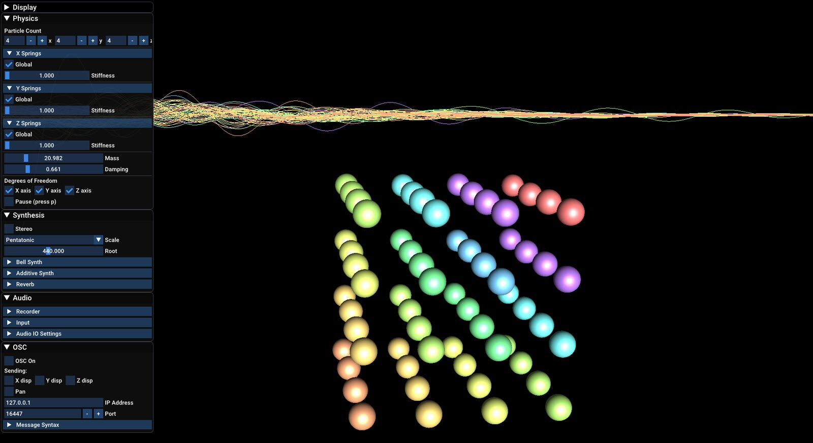
CHON configured in a 4x4x4 cube.
Interface
CHON was designed to allow the user to interact with the particle system as directly and intuitively as possible. The visual interface consists of the particle system itself, a graph readout of all the particle displacements, and a GUI (Graphical User Interface) for changing various parameters of the system (see Image 5). The auditory interface of CHON consists of various optional synthesis algorithms. CHON accepts user input via mouse and keyboard. The audio engine and the visual interface of CHON were facilitated by the Allolib C++ framework [15].
Visual Interface

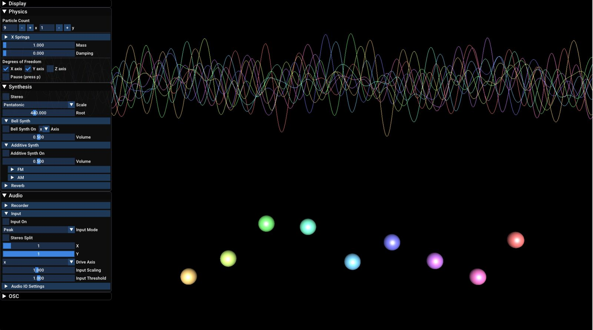
The interface of CHON showing the particles, a graph of particle displacement, and the menus on the left.
CHON's visual interface is dominated by the particle simulation in the center of the screen. It is roughly skeuomorphic — the kind of particle system it simulates is mimicked in the visual representation on screen. The spheres on screen are analogous to the masses in a mass-spring system, and if you displace the system, it behaves as you would expect a real mass-spring system to behave. The particles where given different colors to differentiate them and to allow them to be mapped to the 2D displacement graph.
The displacement graph is located above the particle simulation on the screen. In the graph, there is a line for each particle that is mapped to the same color as the particle it represents. The graph shows the displacement of each particle from its equilibrium position in a particular axis. The user may choose which axis is graphed using the GUI described below. The graph serves as an additional readout for the user that allows them to understand the dynamics of the system better. It also provides a way to visualize the displacement data that can be broadcast over OSC.
The GUI of CHON presents further options to control the program. It is divided in to four windows: Display, Physics, Synthesis, Audio, and OSC. The windows are arranged on the left side of the screen, and each one can be collapsed or expanded using the triangle in the top-left of the window. Pressing "g" on the keyboard shows/hides the GUI.
The Display window controls what is visible and some other aspects of visual display. The Physics window allows the user to alter the physical properties of the CHON simulation. The Synthesis window provides control over the internal sound engine of CHON. The Audio window allows the user to change and configure the audio input and output devices. The OSC window provides control over the OSC broadcasting functionality of CHON.
Auditory Interface
Though more powerful and flexible sound design is possible by pairing CHON with an external audio application, the internal sound engine in CHON can generate compelling results. There are two main paradigms under which the sound engine operates: Continuous and Trigger.
The continuous paradigm is represented by the "additive synth" in the sound engine. The additive synth generates a sine tone for each particle in CHON, the frequency of which can be set by the global tuning menu or individually by right clicking on each particle. The continuous movement of the particle in any direction can then be coupled to either an Amplitude Modulation (AM) or Frequency Modulation (FM) effect. The AM coupling ties the amplitude of the sine tone of each particle to the displacement of that particle (see . The FM coupling ties the width of the FM effect to the displacement of the particle. For example, if AM is coupled to the x axis, and the particle moves in the x axis, then the amplitude will gradually increase and decrease with the particle’s displacement. This is the reason for calling it the "continuous" paradigm.
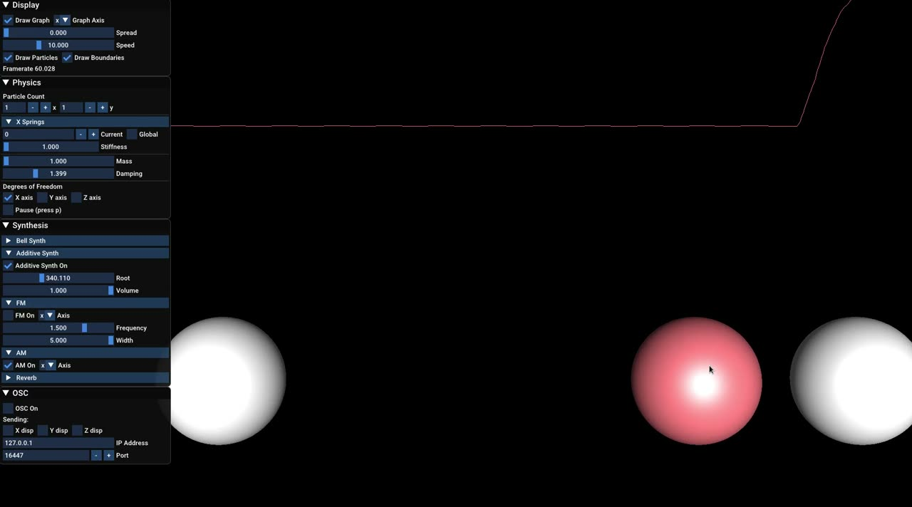
▶The AM Synthesis coupling of CHON
(https://assets.pubpub.org/1afeixgm/61650155505604.mp4)
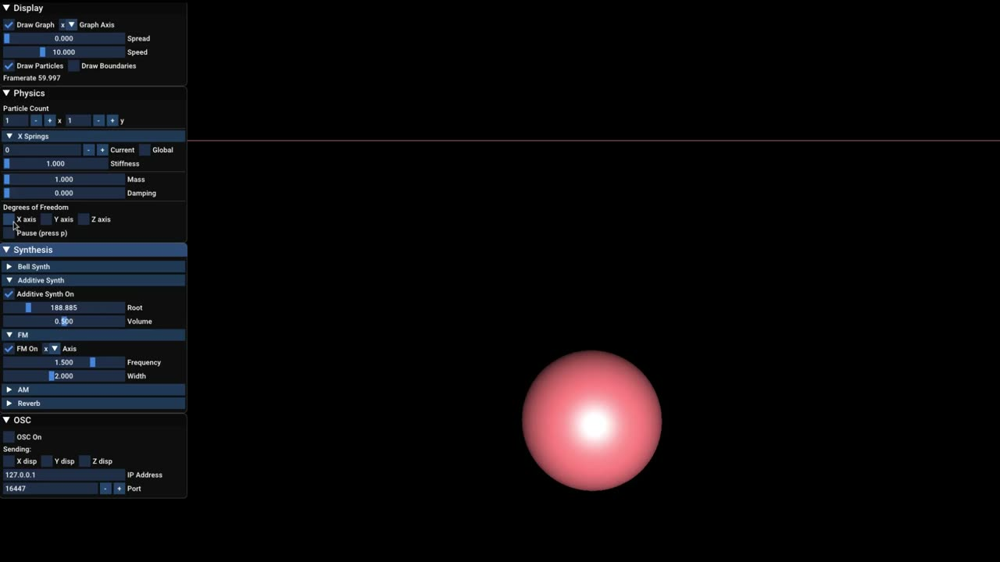
▶The FM Synthesis coupling of CHON
(https://assets.pubpub.org/u28xaxbc/11650155664775.mp4)
The trigger paradigm is represented by the bell synth. The bell synth is a sine tone tuned according to user-defined settings, with an amplitude envelope governed by a 1-second ADSR. The ADSR envelope is triggered whenever the particle crosses its equilibrium point in the selected axis. This allows cascading effects where each particle triggers its bell sound and pushes the next particle to trigger its bell sound and so on(see Video 3).
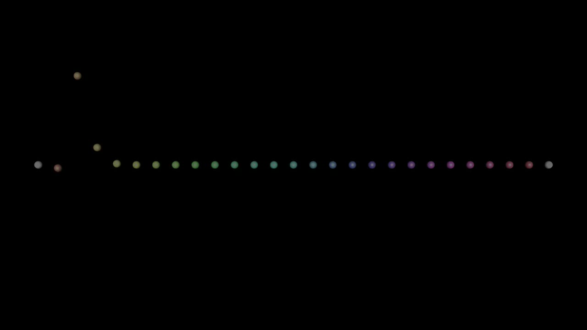
▶CHON’s trigger paradigm - An ADSR envelope is triggered for each particle when it crosses its equilibrium or trigger point.
(https://assets.pubpub.org/dly1qcu4/41642885689227.mp4)
CHON’s audio engine also includes a reverb with an adjustable decay time, a tuning functionality to adjust the pitch of each particle’s sound output, a stereo panning feature which can place each particle’s sound in a stereo soundfield according to the particle’s position in the simulation, and audio input driving.
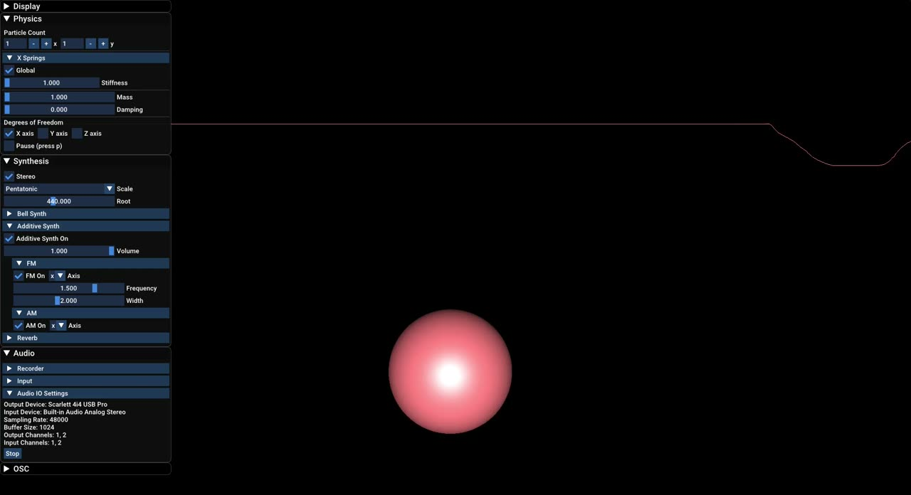
▶The stereo panning feature in CHON.
(https://assets.pubpub.org/hwscupmq/31650155182915.mp4)
CHON’s audio input driving allows it to simulate another fundamental oscillation model in physics: the driven oscillator. With audio input driving, the driving force acting on CHON is an audio signal from a microphone or another application. Using the Audio IO Settings module, the user can select an audio input source and CHON will begin listening. The Input module, pictured in Image 6, allows the user to configure the input driving parameters.

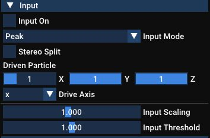
CHON’s audio input driving feature can be configured using the input menu in the GUI.
With this feature, CHON can not only be activated by displacing particles with the mouse, but can also respond to audio input and be set in motion with sonic energy. This motion could then activate the internal synthesis engine of CHON(see Video 5). Alternatively, the data of the motion of the particles can be sent out via OSC to another application or synthesizer. One can set up CHON for music with a live performer in which the sound of the performer drives CHON in sympathetic resonance.
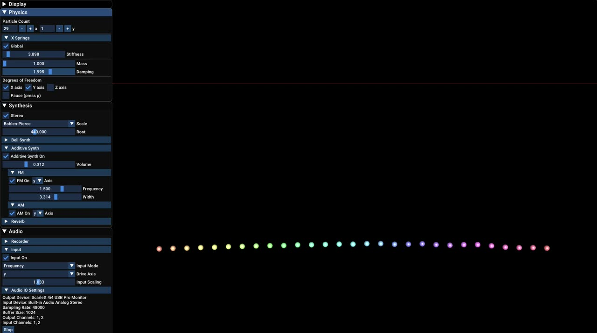
▶CHON being driven by external audio sources.
(https://assets.pubpub.org/t7hwlddg/11642886094496.mp4)
Applications
CHON can be used to generate sound with its internal sound engine or by sending the data to an external application such as a DAW, a visual programming environment like Max or Pure Data, or even a physical synthesizer that accepts OSC data. Pairing the OSC output of CHON with a digital audio workstation, one could map the displacement of each particle to the panning or volume of various tracks. CHON could also control audio processing parameters on each track such as filter frequency, reverb wet/dry signal, pitch shift, distortion/saturation level, and others. I have also heard from composers who have used CHON with the virtual modular synthesis software VCVRack. Another user paired CHON with a Processing sketch to create generative visual art.
In my own work Psi (2021), I use CHON to generate sound based in classical physics to contrast against the quantum mechanical principles driving the rest of the piece. I made use of CHON’s internal audio engine as well as its OSC capabilities to drive synthesis parameters and spatialization in other applications such as EmissionControl2 [16] and Pulsar~ [17](see Video 6). This generated synthesized sound and sound processing effects rooted in a physically deterministic and tangible system.
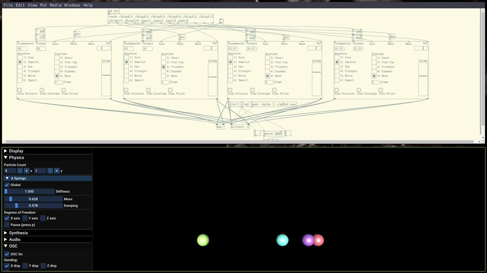
▶CHON controlling 4 instances of Pulsar~ in Pure Data using OSC.
(https://assets.pubpub.org/0tr5k9yf/31642886199885.mp4)
I used CHON to generate a score for two pianos in my miniature piece Pandæmonium (2020), in response to a call for very short compositions of 1 minute or less by the LA-based piano duo Hocket. I set up a 4-particle system in CHON mapped to the four hands of the pianists and sent the OSC output to an algorithmic music composition tool called SCAMP created by Marc Evanstein [18]. I configured SCAMP to interpret the OSC data as the contour of a unique arpeggio for each hand. Each of the 4 particles dictated the movement of one hand of the performers, so that the movement of the performers hands to the right and left of the keyboard would reflect the movement of the particles from right to left in CHON. The displacement data of each particle was quantized to a different scale. I decided that the entire piece would be one single gesture. I set CHON into motion and configured the damping effect so that the particles would come to rest after about one minute. The result is like a sonic explosion that gradually dissipates while each arpeggio pushes and pulls on one another.
Conclusions
Classical physics offers a visceral and universal logical framework for music [19]. For the composer interested in imbuing electroacoustic music with physically tangible gestures, synthesis and musical control based on physical simulations can help expand creativity.
CHON is in ongoing development, with new features added as recently as December 2021. It is open-source (GPLv3 license) and the code as well as pre-built binaries for Linux, Mac, and Windows are free to download at https://github.com/rodneydup/CHON. Anyone is welcome to download and alter the code and contribute to the project. As the scope of CHON is expanded, the interface should be continually refined to make it as accessible and user-friendly as possible, preserving the immediate gratification of opening the application and setting the system into motion. To this end, the author plans to organize a user study to gain feedback and to evaluate the software and user experience more rigorously. Some interesting directions for CHON would be to add compatibility with gestural control interfaces such as LeapMotion [20] or Wekinator [21], user-defined presets, and more spatial and physical configurations for the coupled oscillator networks.
CHON is a powerful tool for composers seeking to explore systems of coupled harmonic oscillators. It is easy to begin using, but sophisticated enough for advanced use-cases. The user can set CHON into motion and it will produce a chain reaction on its own from there. However, the user can also intervene to interrupt a moving particle, break symmetry, and cause new ripples, waves, and explosions.
Acknowledgments
Thank you to the following people for testing, feedback, advice, and guidance during the development of CHON: Karl Yerkes, Curtis Roads, Aaron Anderson, Yon Visell, Kramer Elwell, Stejara Dinulescu, and JoAnn Kuchera-Morin.
Ethics Statement
CHON is designed with accessibility as a core value. The software is free and open-source, easy to download and install, and the interface is easy to use. Multiple modalities for input, including cursor input, keyboard shortcuts, and audio input, allow for multiple means of interaction depending on the ability and desires of the user. The author reports no conflict of interest, no negative environmental impacts related to the present work, and no breaches of privacy related to the software CHON or this paper.
Citations
- ↩Varese, E., & Wen-chung, C. (1966). The Liberation of Sound. Perspectives of New Music, 5(1), 11. https://doi.org/10.2307/832385
- ↩Ligeti, G. (1962). Poéme Symphonique.
- ↩Modartt. (n.d.). Pianoteq. In Madartt: Virtual instruments, physically modelled. https://www.modartt.com/
- ↩Arturia. (n.d.). V-Collection. https://www.arturia.com/products/analog-classics/v-collection/overview
- ↩Eckel, Iovino, & Caussé. (1995). Sound synthesis by physical modelling with modalys. Proceedings of the International Symposium on Musical Acoustics, 479–482.
- ↩AAS. (n.d.). AAS—Instruments, synthesizer, and effect plug-ins based on physical modeling. https://www.applied-acoustics.com/
- ↩Villeneuve, J., & Leonard, J. (2019). Mass-Interaction Physical Models for Sound and Multi-Sensory Creation : Starting Anew. Proceedings of the 16th Sound & Music Computing Conference, 187–194.
- ↩Cadoz, C., Luciani, A., & Florens, J.-L. (1993). CORDIS-ANIMA: A Modeling and Simulation System for Sound and Image Synthesis - The General Formalism. Computer Music Journal, 17(1, Spring 1993), 19–29. https://hal.archives-ouvertes.fr/hal-01234319
- ↩Cadoz, C., Luciani, A., & Florens, J.-L. (1993). CORDIS-ANIMA: a Modeling and Simulation System for Sound and Image Synthesis - The General Formalism. Computer Music Journal, 17(1, Spring 1993), 19–29. https://hal.archives-ouvertes.fr/hal-01234319
- ↩Leonard, J., & Villeneuve, J. (2019). MI-GEN∼: An Efficient and Accessible Mass-Interaction Sound Synthesis Toolbox. Proceedings of the 16th Sound & Music Computing Conference, 340–347.
- ↩Henry, C. (2004). pmpd : Physical modelling for Pure Data.
- ↩DuPlessis, R. (2021). CHON. https://github.com/rodneydup/CHON
- ↩Hooke, R. (1678). De potentia restitutiva. Printed for J. Martyn.
- ↩Newton, I., 1642-1727. (1846). Newton’s Principia : The mathematical principles of natural philosophy. First American edition, carefully revised; corrected / with a life of the author, by N. W. Chittenden. New-York : Daniel Adee, 1846. https://search.library.wisc.edu/catalog/999810640302121
- ↩Group, A. R. (2021). Allolib. https://github.com/AlloSphere-Research-Group/allolib
- ↩Kilgore, J., Roads, C., & DuPlessis, R. (2020). EmissionControl2 (1.1) [Computer software]. https://github.com/EmissionControl2/EmissionControl2
- ↩DuPlessis, R. (2021). Pulsar~. https://github.com/rodneydup/pd-pulsar
- ↩Evanstein, M. (2019). SCAMP:Suite for Computer-Assisted Music in Python. http://marcevanstein.com/Writings/Evanstein_MAT_Thesis_SCAMP.pdf
- ↩DuPlessis, R. (2021). CHON: From physical simulation to musical gesture [Phdthesis, University of California Santa Barbara]. https://mat.ucsb.edu/Masters/MATMastersDoc_DuPlessis.pdf
- ↩Ultraleap. (2021). Leap Motion Controller. https://www.ultraleap.com/product/leap-motion-controller/
- ↩Fiebrink, R. (2021). Wekinator - Software for real-time, interactive machine learning. http://www.wekinator.org/